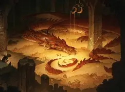
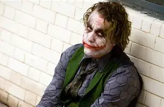
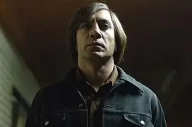

Star Wars: Episódio IV – Uma Nova Esperança (1977-1983)
-Darth Vader é um dos principais vilões de Star Wars. Antes conhecido como Anakin Skywalker, ele era um Jedi que caiu para o lado sombrio da Força. Usa uma armadura negra para sobreviver, possui grande poder e serve ao Imperador, mas ainda mantém conflitos internos e um vínculo importante com seu filho, Luke Skywalker.

O Hobbit: A Desolação de Smaug(2013)
-Smaug é um dragão gigantesco, poderoso, inteligente e extremamente ganancioso. Ele tomou a Montanha Solitária (Erebor) e expulsou os anões que viviam lá, passando a guardar todo o tesouro do reino. É capaz de voar e lançar fogo, além de possuir uma personalidade arrogante e cruel. No entanto, apesar de sua força, Smaug possui uma fraqueza que pode ser explorada por seus inimigos.

batman: cavaleiro das trevas(2008)
O Coringa é um vilão fictício da DC Comics, conhecido por sua aparência assustadora, personalidade caótica e comportamento imprevisível. Ele é o principal inimigo do Batman e costuma usar o humor, a violência e a manipulação para causar o caos.

onde os fracos não tem vez(2007)
Anton Chigurh, de Onde os Fracos Não Têm Vez, é um assassino frio e implacável, que age como uma força inevitável da morte. Ele se destaca por sua calma perturbadora, por usar uma arma incomum (um cilindro de ar comprimido) e por decidir o destino de algumas vítimas com o lançamento de uma moeda. Sua aparência estranha e comportamento calculista o tornam um dos vilões mais memoráveis do cinema moderno.

Harry potter
Lord Voldemort, nascido como Tom Servolo Riddle, é o principal vilão da saga Harry Potter: um bruxo das trevas obcecado pela pureza de sangue e pela imortalidade, que se torna o arqui-inimigo de Harry Potter. Ele é conhecido por sua crueldade, pela criação de Horcruxes e por liderar os Comensais da Morte em sua tentativa de dominar o mundo bruxo.